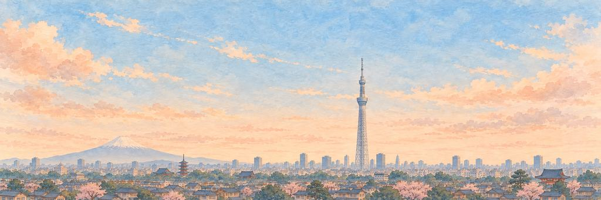

Tokyo paper plane game
See the tallest tower in the world, with the snowy mountain behind it.
The streets are packed tight. Get past the lucky cat, then the kabuki actor.
From Edo to Tokyo
Tokyo was once Edo, a small castle town on a bay. In 1603 it became the seat of the shoguns, Japan's military rulers, and grew into one of the biggest cities on Earth. In 1868 it was renamed Tokyo, "eastern capital", and the emperor moved there from Kyoto.
“I'd look for the old castle moats from above.”
The landmarkThe tallest tower
Tokyo's broadcast tower in Sumida opened in 2012 at 634 metres, the tallest tower in the world. The height was picked partly for its sound: 6-3-4 can be read mu-sa-shi, Musashi, the old name of the province it stands in.
Neighbourhoods
The heart of Tokyo is made up of 23 special wards, home to more than 9 million people. The wider Tokyo area is the biggest city region on Earth, with around 37 million people. Each district has its own feel. Shinjuku has the busiest railway station in the world, used by about 2.7 million people a day in 2022. Shibuya has the famous scramble crossing, where up to about 3,000 people walk across at once each time the lights turn green. Asakusa is the old quarter, where many river boats start.
The river and the bay
The Sumida River runs through the east of the city and out into Tokyo Bay. Boats carry visitors from Asakusa down the river, under about a dozen bridges, to the bay. Every summer, on the last Saturday of July, a big fireworks show lights up the river. It goes back to 1733, when a shogun held a river festival to remember the people lost to famine and sickness the year before. Out in the bay, the island district of Odaiba takes its name from cannon forts built there in 1853. The Rainbow Bridge, opened in 1993, links it to the city.
The skyline
The Tokyo Metropolitan Government Building in Shinjuku has two free viewing decks, 202 metres up. On a clear day you can pick out Tokyo Skytree, Tokyo Tower and the Rainbow Bridge from there.
When to see it
Go up at sunset and watch the city lights come on. After dark, the Rainbow Bridge glows over the water, lit by solar power gathered during the day.
Who keeps the wish in Tokyo.
An Elite wakes first; the Boss guards the wish itself. Hit their weak points for a BONK!, land the last blow for a KO!, and each one grins and takes a bow.
-
The Elite


The Lucky Cat
Waves at everyone who passes · Keeper of Asakusa
One legend says a lord named Ii Naotaka was caught in a storm in western Edo, today's Tokyo, when a cat at a small gate raised its paw as if beckoning. He stepped inside, and lightning struck where he had stood. Its raised-paw figurines, maneki-neko, now wave in shop windows all over Japan.
The lucky cat starts waving its paw. The cat wobbles, then waves faster. The cat waves one last time and lowers its paw.
“I'd wave back, just in case it's lucky.”
Guards a relic: the Edo Koban. An oval gold koban from old Edo, struck where the Bank of Japan stands now, kept by the lucky cat on the avenue. Every flight pays a little more.
-
The Boss

The Kabuki Actor
Frozen in the fiercest pose · Keeper of Ginza
Around 1603 a dancer named Izumo no Okuni began performing on the dry bed of Kyoto's Kamo River, in wild costumes that thrilled every class. Her art's name most likely comes from kabuku, to lean or to be outlandish. In 1629 women were banned from kabuki stages, and men have played every role since.
The kabuki actor stamps once and freezes in a fierce pose. He staggers, snaps his fan open and holds the pose. The actor holds one last pose, then bows.
“I'd try his stomp and his big frozen pose.”
Tokyo cleared. The mountain was even whiter than in the pictures.
- The cat was waving hello, I think. Or goodbye.
- His face paint was red. Red means a hero.
The plane reaches Tokyo from Paris. Clear it and the map opens the way to Sydney and Beijing. Its own plane look is Sakura Petals, a trail look.